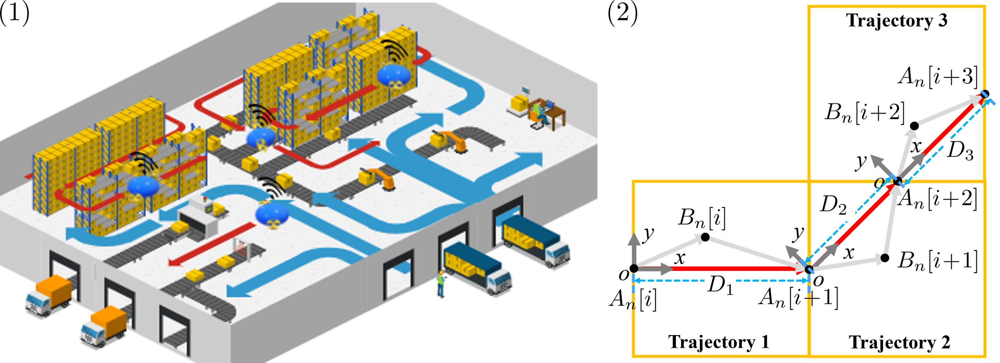
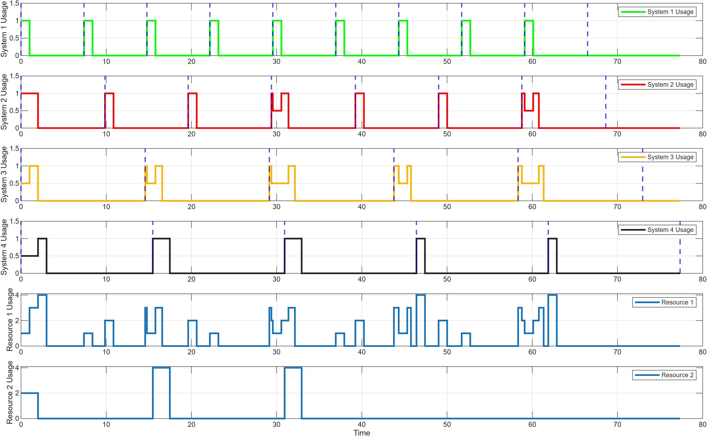

Scheduling delay
Discourages waiting for shared computation while a blimp continues to drift.
Scheduling-Control Co-Design · Multi-Robot Inspection
Ongoing research: manuscript under review.
A robust co-design framework coordinates shared computation and motion control for cooperative robotic blimps operating under uncertain wind.
System
Multiple blimps follow inspection routes while sharing heterogeneous off-board computation for wind estimation and control updates.
Physical and computational system
Before its wind-estimation task completes, a blimp follows the nominal heading and drifts with the unknown wind. Once the estimate becomes available, the heading is corrected toward the next waypoint. A longer scheduling delay therefore creates a larger deviation and a smaller safety margin inside the grid cell.

Enter a grid cellGenerate a wind-estimation task at \(\alpha_n[i]\).
Resolve contentionAssign at most one task to each processor.
Estimate local windComplete the task at \(\gamma_n[i]\).
Correct the headingSteer from the drift point to the next waypoint.
When a blimp enters an inspection cell at \(t=\alpha_n[i]\), it releases a local wind-estimation task. Until that task finishes at \(t=\gamma_n[i]\), the controller does not yet have the updated wind information, so the wind-perturbed motion can drift away from the predicted trajectory.
Once the estimate becomes available, the controller redirects the blimp toward the next waypoint. The dashed green path is the predicted motion, the solid black path is the wind-perturbed motion, and the gray region qualitatively represents the tracking error accumulated over the waiting interval \([\alpha_n[i],\gamma_n[i]]\). Reducing scheduling delay shortens this interval and can therefore reduce trajectory deviation.
Optimization problem
The controller jointly selects resource assignments and motion-control actions. The unpublished implementation uses a more detailed model; the public formulation below shows only its core structure.
Resource feasibility · heterogeneous task timing · wind-perturbed dynamics · route and actuation safety · robust delay feasibility
Discourages waiting for shared computation while a blimp continues to drift.
Penalizes separation between the planned and wind-perturbed trajectories.
Checks whether improved coordination also changes the overall mission duration.
Representative animation example
This animation initially uses the fixed seed 20260824, so Restart or a page refresh reproduces the same illustrative wind realization; Generate another example creates a different realization. The dashed trajectory uses the mean wind estimate, the solid trajectory uses the sampled realization, and the faint trajectories show Monte Carlo samples.
Scheduling result from the original simulation

Representative control-aware schedule initialized.
Representative four-blimp study
| Metric | Proposed method | Fixed priority | Difference |
|---|---|---|---|
| Total scheduling delay | 8.66 s | 18.89 s | −54.2% |
| Cumulative tracking error | 1.1365 m2 | 1.3171 m2 | −13.7% |
| Total inspection time | 114.56 s | 115.46 s | −0.90 s |
The main improvement is the reduction in accumulated waiting time, which limits wind-induced drift before the controller receives an updated local wind estimate. The similar inspection times indicate that the primary gains are better coordination and tracking quality rather than a large reduction in total mission duration.